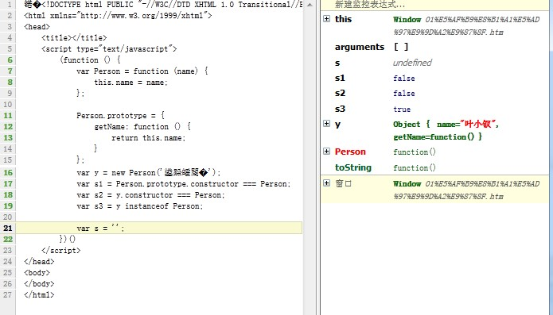

前言
javascript是一种基于对象的语言，意思是我们遇到的所有东西几乎都是对象（函数也是）。
虽然class为js的保留字，但是他没有任何实际意义（当他有实际意义了，我们很多代码又要重新写啦。。。），因为js并不是真正意义上的变相对象编程语言，所以class名存实亡。
js面向对象的路在何方？
本人才疏学浅所以文中会有一些错误请各位指出，因为是边写做实验的，所以会有我的思考过程，行文可能会有点乱，请见谅。
最简单的封装
我们来看一个“面向对象”的例子：
// var Person = new Object(); var Person = { name: '叶小钗', getName: function () { return this.name; } }; var n = Person.getName(); alert(n);
这种写法让我们感觉一目了然，他让我们感觉到了面向对象，但是他的缺点也很明显：
按道理说name应该是私有变量，但我们这里可以无耻的访问之，修改之。
另外就是想要用这种方法生产多个实例就是一个传说（虽说可以实现）
虽说如此，他还是完成了js最简单的封装，具有面向对象的特性了。
但是这种方式其实并不适合用来定义程序相关流程，而应该用来保存数据，比如json相关，所以曾经这么做的同学以后建议不要这么做了。
隐藏私有变量
1 var info = { 2 name: '叶小钗', 3 age: 105 4 }; 5 6 var Person = function (cfg) { 7 this.name = cfg.name || ''; 8 function getName() { 9 return getName; 10 } 11 } 12 13 var name = Person.getName();
以上代码，我就是想说明会报错罢了，因为在js中只有函数具有作用域，函数外部是无法访问还是内部的变量的，函数内部却可以访问函数外部的东西，在函数内存在内部函数，且内部函数用到了外部函数变量便会延长作用域链，形成传说中的闭包。
但是，在以上情况下，若我要访问其中的方法有以下做法：
1 将getName做返回值返回
2 在外部定义全局变量，在函数内部将getName赋予他（最简单window.getName = getName）
这两种方法各有各的问题，方法一函数每次都会创建，用完便会销毁；方法二永远不会销毁
由于以上原因便因此了今天的主角——构造函数。
new与构造函数
当一个函数被构建时，Function构造器产生的函数会被隐式赋予一个prototype属性
prototype包含一个constructor对象，而constructor便是该新函数对象
constructor意义不大，但记住每个函数都会拥有prototype属性
我们这里再来理一理这个prototype：
在js中函数都会有一个prototype属性
该属性指向另一对象（亦包含prototype），如此便形成了原型链，并最终指向object对象
在某个对象调用某个方法时，若是他没有该方法就会向上查找直到object
新声明函数的prototype指向object对象，其constructor指向函数对象本身
PS：所以根据构造函数创造的对象，其原型指向构造函数的原型
算了，通俗点来说便是：
prototype就是一模板，新创建的模板就是对他的一个拷贝（虽说本质是指针的指向。。。）
即构造函数拥有prototype属性（指向一个对象，包括方法与属性），这些都会被构造函数实例继承。
1 var Person = function (name) { 2 this.name = name; 3 }; 4 Person.prototype.getName = function () { 5 return this.name; 6 }; 7 8 var y = new Person('叶小钗'); 9 var n = y.getName(); 10 var s = '';
以上便是一个简单的应用，但我们还是来理一理：
1 (function () { 2 var Person = function (name) { 3 this.name = name; 4 }; 5 Person.prototype.getName = function () { 6 return this.name; 7 }; 8 var y = new Person('叶小钗'); 9 var s0 = Person.constructor.constructor === Function; 10 var s1 = Person.constructor === Function; 11 var s2 = Person.prototype.constructor === Person; 12 var s3 = Person.prototype === Object; 13 var s4 = Person.constructor === Object; 14 var s5 = y.constructor === Person; 15 16 var s = ''; 17 })()
如图所示：
1 对象y的构造函数指向Person构造函数
2 构造函数Person原型中包含了指向自己的constructor属性
3 构造函数的constructor属性指向Function
4 Function的constructor最终指向object
我们抛开其他的不说，就说y对象：
我们根据new操作符实例化了y对象，按照之前说的，y对象便会对Person构造函数的prototype属性做一次拷贝
而拷贝的属性中暗藏一个constructor属性，而该constructor属性指向了Person，所以他们产生了联系，我们这里可以做个小小的变动：
instanceof：如果obj对象是构造函数Fun的一个实例，则 obj instanceof Fun 返回 true，
1 (function () { 2 var Person = function (name) { 3 this.name = name; 4 }; 5 6 Person.prototype = { 7 getName: function () { 8 return this.name; 9 } 10 }; 11 var y = new Person('叶小钗'); 12 var s1 = Person.prototype.constructor === Person; 13 var s2 = y.constructor === Person; 14 var s3 = y instanceof Person; 15 16 var s = ''; 17 })()

我们看到，虽然我们强制取消了构造函数的constructor属性，但是y还是属于Person的实例，所以constructor真没什么用了。。。
继承
我们所谓继承，便是子类拥有父类公开出来的方法罢了，到这里理解就变成了子函数拥有父函数所有prototype属性，于是：
1 (function () { 2 var Person = function (name) { 3 this.name = name; 4 }; 5 //Person.prototype = {};//这句将影响十分具有constructor属性 6 Person.prototype.getName = function () { 7 return this.name; 8 }; 9 10 var Student = function (name, sex, id) { 11 this.name = name || '无名氏'; 12 this.sex = sex || '不明'; 13 this.id = id || '未填'; //学号 14 }; 15 //相当于将其prototype复制了一次，若是包含constructor的话将指向Person 16 Student.prototype = new Person(); 17 Student.prototype.getId = function () { 18 return this.id; 19 } 20 var y = new Person(); 21 var s = new Student; 22 var s1 = y instanceof Person; 23 var s2 = s instanceof Student; 24 var s3 = s instanceof Person; 25 var s4 = Student.prototype.constructor === Person; 26 var s5 = Student.constructor === Person; 27 var s6 = Student.constructor === Function; 28 29 var s = ''; 30 })();
根据此例子，他们彼此间的关系还是比较明显了，我这里单独说下prototype下的属性：
一般情况下，prototype下用于定义函数，但并不是说他属性没用，若是给他定义属性的话相当于每个子对象共享着一个数据！
一个重要的暗示便是：我们可以根据该数据（数组、对象字面量）来传递信息，比如我们会遇到这个场景的。
我们做了一个用于验证表单输入的控件，他对每个元素进行单独验证，但是当我们提交表单时我们会需要知道整个表单上哪些元素可以，哪些不可以，这个时候我们的prototype属性可能就可以派上用场了！（个人理解，有误请指出）
又如，我前面写过一篇文章：基于jQuery的下拉菜单菜单【02】，诸位上眼！！！，里面就用到了这个东西，具体便不展开了。
isPrototypeOf/hasOwnPrototype
isrototypeOf该方法拥有判断某个prototype对象和某个实例之间的关系：
1 (function () { 2 var Person = function (name) { 3 this.name = name; 4 }; 5 //Person.prototype = {};//这句将影响十分具有constructor属性 6 Person.prototype.getName = function () { 7 return this.name; 8 }; 9 10 var Student = function (name, sex, id) { 11 this.name = name || '无名氏'; 12 this.sex = sex || '不明'; 13 this.id = id || '未填'; //学号 14 }; 15 //相当于将其prototype复制了一次，若是包含constructor的话将指向Person 16 Student.prototype = new Person(); 17 Student.prototype.getId = function () { 18 return this.id; 19 } 20 var y = new Person(); 21 var s = new Student; 22 23 var s1 = Student.prototype.isPrototypeOf(s); 24 var s2 = Student.prototype.isPrototypeOf(y); 25 var s3 = Person.prototype.isPrototypeOf(y); 26 var s4 = Person.prototype.isPrototypeOf(Student); 27 var s5 = Person.prototype.isPrototypeOf(Student.prototype); 28 29 30 var s = ''; 31 })();
说白了就是看某个实例是否是属于自己，这里随便提一个问题大家看看：
var s6 = Function.prototype.isPrototypeOf(Person); var s7 = Function.prototype.isPrototypeOf(Student);
hasOwnPrototype用来判断一个属性到底是本地属性还是继承自prototype，这里就不举例了
语法糖
关于以上继承的写法也许不太“面向对象”，所以我们提供看这个语法糖：
1 (function () { 2 Function.prototype.method = function (name, func) { 3 this.prototype[name] = func; 4 return this; 5 }; 6 Function.method('inherits', function (Parent) { 7 this.prototype = new Parent(); 8 return this; 9 }); 10 11 var Person = function (name) { 12 this.name = name; 13 }; 14 15 Person.method('getName', function () { 16 return this.name; 17 }); 18 19 var Student = function (name, sex, id) { 20 this.name = name || '无名氏'; 21 this.sex = sex || '不明'; 22 this.id = id || '未填'; //学号 23 }; 24 25 Student.inherits(Person); 26 Student.method('getId', function () { 27 return this.id; 28 }); 29 30 var y = new Person(); 31 var s = new Student; 32 33 var s = ''; 34 })();
结语
小弟自知对面向对象相关了解不够透彻，今天便写到这里吧，希望某天能带来面向对象的作品。
如果你觉得这篇文章还不错，请帮忙点击一下推荐，谢谢！